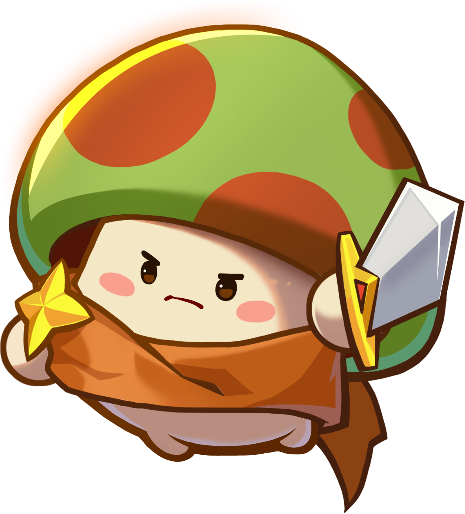

Guides de classes, stratégies PVE & PVP, et un calculateur de dégâts complet — tout en un seul endroit, créé par un joueur pour les joueurs.

Des conseils pour débutants aux formules de dégâts avancées — ce guide couvre des contenus pour le PVE & PVP incluant les critiques, les boss et les 4 classes avec le dresseur.
Guides approfondis pour Épée, Hache, Magie et Dresseur. Priorités de stats, astuces de compétences et style de jeu expliqués clairement.
Stratégies distinctes pour le grinding PVE et les arènes PVP. Apprenez quand attaquer à fond ou jouer défensif.
Entrez vos stats et obtenez les dégâts exacts — étape par étape, avec la vraie formule LoM incluant les critiques et les boss.
Ce site fan a été créé pour combler le vide entre les pages wiki éparpillées et les infobulles vagues du jeu. Les formules sont issues de recherches communautaires et de tests en jeu — ce que vous voyez correspond à ce que le jeu calcule. Les guides sont écrits à partir d'une vraie expérience de jeu pour les différents contenus.